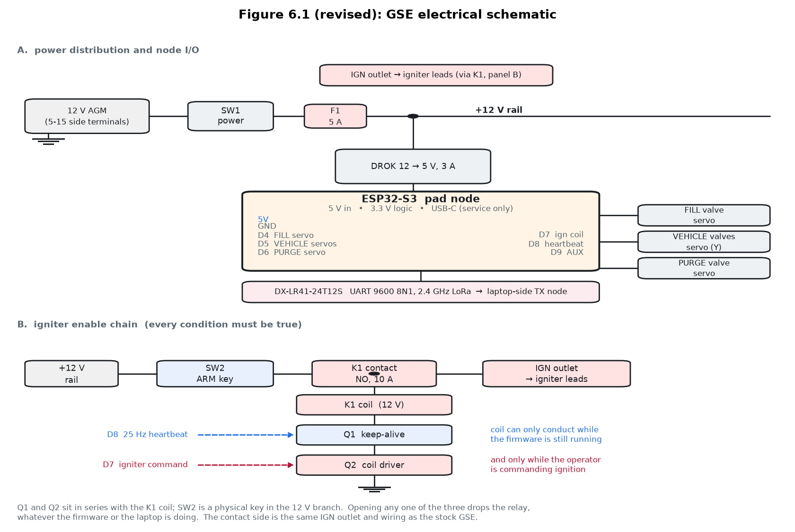
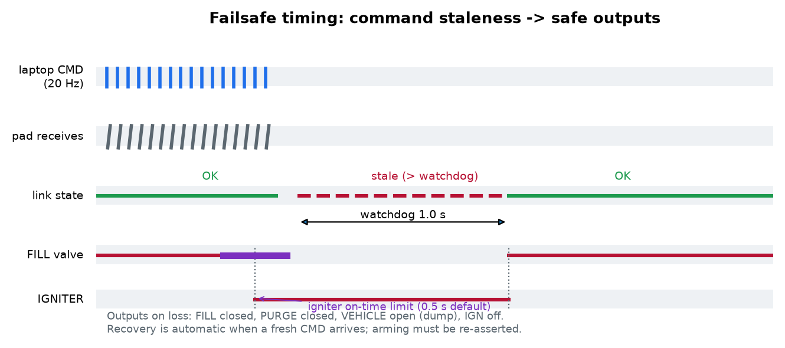
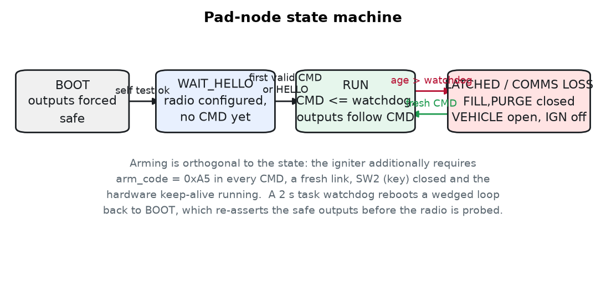
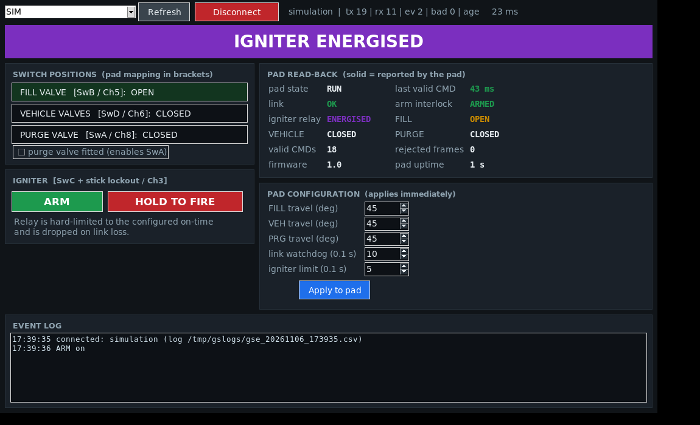

| Replaces | HCR-5100 rev 01, pages 235–283 (§6.1, §6.2, §6.3 OP 6 and OP 8) |
| Revision | rev 02 draft — ECR-01, control subsystem change |
| Date | 6 November 2026 |
| Reason | Replace the FS-i6X / FS-iA10B radio pair with a laptop-driven ESP32-S3 + DX-LR41-24T12S link |
| Status | Draft for review — not to be used for a live firing until the test gates in the companion test plan are signed |
This is an insert, not a rewrite of the whole manual. Pages numbered 236–255 replace the existing Section VI pages; the content that follows them (Section VII) needs the four changes listed at the end of this insert, which are also summarised in the revision history entry below. Everything not mentioned here — the fluid system, the servo-actuated ball valves, the cables, the fill line, and all of Section V — is unchanged.
Revised content is marked ■ REVISED. Deleted text is shown struck through only where a reviewer needs to see exactly what was removed.
| Revision | Description | Date |
|---|---|---|
| 01 | Initial release | 17 Aug 2024 |
| 02 | GSE control subsystem replaced (ECR-01): FS-i6X transmitter and FS-iA10B receiver replaced by a laptop-driven ESP32-S3 pair with DX-LR41-24T12S 2.4 GHz LoRa modules. Section VI §6.1, §6.2, §6.3 OP 6 and OP 8 revised; §7.2, §7.3 and §7.5 amended. | 6 Nov 2026 |
| Item | Rev 01 | Rev 02 |
|---|---|---|
| Operator control | FS-i6X transmitter, four switches under covers | Laptop application over USB-C, plus a physical arm key at the pad |
| Radio link | AFHDS 2A, 2.4 GHz GFSK, closed protocol | 2.4 GHz LoRa (SX1281), 13 dBm, full-duplex by channel split |
| Receiver | FS-iA10B, 10 PWM channels | ESP32-S3 pad node, 3 PWM channels + igniter relay |
| Channel map | Ch5 / Ch6 / Ch8 / Ch3, fixed by the transmitter firmware | Same numbers, software-defined, re-mappable from the GUI |
| Endpoint adjustment | Transmitter menu, ±120 % | GUI, servo travel 5–90° per channel |
| Failsafes | Per-channel positions in the transmitter menu | Pad-node watchdog (0.3–3.0 s) + TX-node safe stream + hardware heartbeat |
| Igniter | PWM relay, on-time set by the operator's finger | One pulse per press, hard limit 0.1–2.0 s, series key switch and heartbeat |
| Logging | None | Every command and every reported state, CSV, 20 Hz |
| Cost | — | +$16 net; −$72 of removed parts, +$89 of added parts |
Ground Support Equipment, or GSE, is a critical part of any rocket system. The launch vehicle may be the most interesting part, but it simply does not function without GSE.
For solid rockets, GSE can be as simple as a switch that fires an igniter. For UC-valve hybrids, where the igniter also acts as the main oxidizer valve, it must also be capable of loading oxidizer into the motor. For Mojave Sphinx and all standard liquid rockets, it must also be able to open the main propellant valves to start the flow of fuel and oxidizer, separate from the ignition command. Furthermore, since any operation in which N2O is present outside the supply bottle is hazardous to personnel, all such activities must be performed at a safe distance. This requires a remotely-controlled fluid handling system which is both safe and economical, so as to not dwarf the cost of the rocket itself.
The purpose of the GSE is to:
For rockets with pneumatic Half Cat valves, the valve-open command may be a trigger for a pyrotechnic device, such as a line cutter that severs and vents a pneumatic pressure supply tube. In any standard liquid rocket, the oxidizer dump may be the same command as the normal valve-open, only without triggering the igniter, and may involve dumping both propellants. Only in the unlikely event of complete power loss during fill should the static vent be relied upon to fully empty the oxidizer tank, as this can take upwards of an hour depending on tank and vent sizes. The remote control system described in this guide is configured so that a loss of communication with the GSE will automatically open the vehicle propellant valves, returning the system to a safe state.
The GSE can be divided into two major subsystems: the fill system and the control system. The fill system is a simple plumbing assembly consisting of a supply bottle connection, a fill valve, and a QD connection.
The control system is purpose-built and laptop-driven. A small application on the operator's laptop sends command frames over USB-C to an ESP32-S3 radio node inside the GSE box, which relays them over a 2.4 GHz LoRa link to a second ESP32-S3 at the launch pad. The pad node drives the three valve servos and the igniter relay directly, and reports the actual state of every output back to the laptop ten times per second. Channel numbering is preserved from earlier revisions — FILL on Ch5, VEHICLE on Ch6, PURGE on Ch8, IGNITER on Ch3 — but is software-defined and can be re-mapped without re-wiring.
Because the link is not a certified hobby receiver, all failsafe behaviour is implemented in the pad node and verified as part of launch preparation: loss of communication for longer than the configured watchdog (1.0 s by default) closes the fill and purge valves, opens the vehicle valves, and de-energises the igniter. This mirrors the safe state that the FS-iA10B receiver was configured for in earlier revisions, and the physics of the safe state is unchanged: no pressure remains in the vehicle, and the igniter cannot fire.
The control system consists of the operator's laptop, two ESP32-S3 radio nodes, two DX-LR41-24T12S modules, the 12 V battery, the voltage regulator, the arm key switch, and the igniter relay. Below is the basic electrical schematic of the GSE.

The FS-iA10B listens on FlySky AFHDS 2A, a closed frequency-hopping protocol that a general-purpose 2.4 GHz LoRa module cannot produce. Removing the receiver therefore means taking ownership of the behaviour it used to provide for free: PWM generation, channel mapping, and failsafes. The pad node and its test plan exist to make that ownership explicit rather than implicit.
Line items 1–20 (fluid system and enclosure) are unchanged from rev 01 except where noted. Lines marked NEW are additions; lines marked DELETED are removed.
| Line | Part Number | Description | Unit | Qty | Cost | Context |
|---|---|---|---|---|---|---|
| 1 | DTUS_FSI6X_10CH | FlySky FS-i6X 10CH transmitter w/ iA10B receiver | $59.99 | 1 | $59.99 | Controller |
| 2 | AZ18080602-03 | Toggle switch guards, 12 mm (pack of 6) — retained for SW1/outlet labelling | $8.49 | 1 | $8.49 | Switch covers |
| 3 | 62586 | Thunderbolt Magnum 12 V 160 CCA AGM battery | $49.99 | 1 | $49.99 | Electrical connections |
| 4 | 20GA-RBP | 20 GA silicone wire, red/black, 10 ft each | $0.00 | 1 | $0.00 | Leftover from avbay |
| 5 | LCATMC1569 | PWM-controlled relay module, 10 A 30 V | $11.99 | 1 | $11.99 | Ignition switch |
| 6 | 090600AFA | DROK 12 V to 5 V converter, 3 A — retained (now also feeds the pad node) | $12.99 | 1 | $12.99 | Battery to logic |
| 7 | GSW-17 | Gardner Bender SPST toggle switch, 6 A | $5.99 | 1 | $5.99 | GSE power switch |
| 8 | 7159K3 | Straight-blade receptacle, 5-15 NEMA, side terminal | $3.36 | 1 | $3.36 | IGN and service outlets |
| 9 | 7526K23 | Nylon wall plate for NEMA outlet | $0.73 | 1 | $0.73 | Outlet cover |
| 10 | YXQ-3PIN-1M | 3-pin servo extension, 1 m (pack of 10) — 2 retained for the vehicle Y-harness | $0.00 | 1 | $0.00 | Leftovers from valves |
| 11–37 | Unchanged from rev 01 (toolbox, eye bolts, servo, ball valve, tank, fittings, tubing, filament, printed parts) | $333.98 | ||||
| Line | Part Number | Description | Unit | Qty | Cost | Context |
|---|---|---|---|---|---|---|
| 38 | ESP32-S3-DEVKITC-1 | ESP32-S3 devkit with native USB (or N16R8 / 8 MB equivalent; or ESP-32S / ESP32-WROOM-32 devkit, see note) | $8.00 | 2 | $16.00 | TX node, pad node |
| 39 | DX-LR41-24T12S | 2.4 GHz SX1281 LoRa module, UART, 13 dBm | $9.50 | 2 | $19.00 | Radio pair |
| 40 | ANT-24G-SMA-3DBI | 2.4 GHz antenna, SMA, 3 dBi (with IPEX pigtail) | $3.00 | 2 | $6.00 | Antennas |
| 41 | PRINTED-CARRIER | Carrier board / proto board for the pad node, with servo headers and a 12 V screw terminal | $3.00 | 1 | $3.00 | Mounting |
| 42 | RLY-12V-1CH-OPTO | Relay module, 1-channel, 12 V coil, 10 A, opto-isolated, with flyback | $6.00 | 1 | $6.00 | Igniter switch (replaces line 5) |
| 43 | IRLZ44N | Logic-level N-MOSFET (Q1 keep-alive, Q2 coil driver, one spare) | $1.50 | 3 | $4.50 | Interlocks |
| 44 | 1N5819 | Schottky diode, coil flyback and RC pump | $0.20 | 4 | $0.80 | Transient protection |
| 45 | SW-KEY-SPST | Key switch, 2-position, SPST (SW2 arm key) | $6.00 | 1 | $6.00 | Physical arm interlock |
| 46 | FUSE-5A-INLINE | 5 A blade fuse and inline holder (F1) | $3.00 | 1 | $3.00 | Over-current |
| 47 | CAP-100U-16V | Electrolytic 100 µF, plus 100 nF ceramic, module supply decoupling | $1.20 | 1 | $1.20 | RF stability |
| 48 | USB-C-PANEL-1M | Panel-mount USB-C extension, 1 m | $7.00 | 1 | $7.00 | Laptop connection |
| 49 | WIRE-KIT-22AWG | 22 AWG hookup wire, crimp terminals, heat-shrink, servo crimp kit | $6.00 | 1 | $6.00 | Harness |
| 50 | PWRBANK-5V-2A | Optional USB power bank for the TX node | $12.00 | 1 | $12.00 | Redundancy |
| Subtotal | Rev 01 | Rev 02 | Delta |
|---|---|---|---|
| Removed lines 1 and 5 | $71.98 | $0.00 | −$71.98 |
| All other lines | $457.47 | $457.47 | $0.00 |
| New lines 38–50 | $0.00 | $86.50 | +$86.50 |
| GSE total | $529.45 | $543.97 | +$14.52 |
The operator's laptop substitutes for the transmitter and is excluded, as the guide already assumes a laptop for data reduction (Section 3). Prices are indicative, single quantity, November 2026.
The GSE presented in this section is constructed within a metal toolbox, which provides a durable housing that protects the system from exposure to the rocket's exhaust and can conveniently also store the tools needed to recycle the rocket between launches. The integrated packaging of the entire system including fill, control electronics, power, and optional CO2 purge requires minimal on-site setup time and is well suited to long term use. If project budget is a limiting factor and only a small number of launches are planned, the GSE can be simplified at the expense of reduced ease of use by eliminating the toolbox and accompanying fittings and fasteners.
| OP | Operation | Status in rev 02 |
|---|---|---|
| OP 1 | Assemble Servo-Actuated Ball Valves (GSE) | Unchanged |
| OP 2 | Assemble Fill System | Unchanged |
| OP 3–5 | Enclosure, bulkheads, fluid system integration | Unchanged |
| OP 6 | Electrical System Integration | REVISED — see page 241 |
| OP 7 | Fabricate Cables and Fill Line | Unchanged |
| OP 8 | Transmitter Setup & Firmware Configuration | REPLACED by OP 9 and OP 10 |
| OP 9 | Assemble and Wire the Control System | NEW |
| OP 10 | Node Bring-up, Configuration and Checkout | NEW |
| QTY | Part Number | Description |
|---|---|---|
| 1 | SABV-MOUNT-V2 | Servo Valve Mount V2.STL |
| 1 | SABV-HCON-V2 | Servo Valve Handle Connector V2.STL |
| — | N/A | 3D printer filament (PLA+, PETG, or ABS recommended) |
| 1 | 4112T22 | Compact High Pressure Brass Ball Valve |
| 1 | DS3225 | 25 kg servo with 25T servo horn |
| 1 | 93475A210 | M3 flat washer, 7 mm OD |
| 1 | 92855A310 | M3 × 0.5, 10 mm low-profile socket head screw |
| 1 | 90272A194 | #8-32 pan head screw, ½" |
| 1 | 90480A009 | #8-32 hex nut |
| — | — | Nylon zip tie, 0.188" width |
| 4 | 92180A044 | M4 × 0.70, 16 mm hex head screw |
| 4 | 90591A141 | M4 × 0.7 hex nut |
| 4 | 98689A113 | M4 flat washer |
| 4 | 92148A160 | M4 split lock washer |
The SABV-04FF servo-actuated ball valve assemblies used in the GSE are identical to those used as the fuel and oxidizer valves on the vehicle. Refer to Section 5 OP 1 for detailed instructions.
If constructing Fill Only GSE, only QTY 1 SABV-04FF is required. If a CO2 purge valve for static testing is desired, build QTY 2 SABV-04FF.
Unchanged from rev 01. Gather:
| QTY | Part Number | Description |
|---|---|---|
| 1 | SABV-04FF | Servo-Actuated Ball Valve Assembly |
| 1 | 79215A673 | CGA 326 to 1/4 NPT adapter, brass |
| 1 | 79215A672 | CGA 326 female nut, brass |
| 1 | 50785K92 | High-pressure brass straight connector, 1/4 NPT female |
| 2 | 50675K162 | 37° flared adapter, 1/4" tube OD × 1/4 NPT male |
Follow rev 01 steps 1–8 without modification. OP 3, OP 4 and OP 5 are likewise unchanged.
| QTY | Part Number | Description |
|---|---|---|
| 1 | ESP32-S3-DEVKITC-1 | ESP32-S3 devkit — PAD node (or ESP-32S, see note) |
| 1 | DX-LR41-24T12S | 2.4 GHz LoRa module |
| 1 | ANT-24G-SMA-3DBI | 2.4 GHz antenna |
| 1 | PRINTED-CARRIER | Pad-node carrier board |
| 1 | RLY-12V-1CH-OPTO | 12 V, 10 A relay module |
| 1 | SW-KEY-SPST | Arm key switch (SW2) |
| 3 | IRLZ44N | Logic-level MOSFET |
| 2 | 1N5819 | Schottky diode |
| 1 | FUSE-5A-INLINE | 5 A fuse and holder |
| 1 | CAP-100U-16V | 100 µF + 100 nF, module decoupling |
| 1 | USB-C-PANEL-1M | Panel-mount USB-C extension |
| 1 | 090600AFA | DROK 12 V to 5 V regulator (retained) |
| 1 | GSW-17 | SPST power switch (retained) |
| 1 | 7159K91 | NEMA outlet (retained) |
| 1 | 7526K53 | Nylon wall plate (retained) |
| 4 | 9027A194 | #8-32 × ½" screws |
| — | WIRE-KIT-22AWG | 22 AWG wire, crimp terminals, heat-shrink |
| QTY | Part Number | Description |
|---|---|---|
| 1 | ESP32-S3-DEVKITC-1 | ESP32-S3 devkit — TX node (or NUCLEO-H753ZI or ESP-32S, see note) |
| 1 | DX-LR41-24T12S | 2.4 GHz LoRa module |
| 1 | ANT-24G-SMA-3DBI | 2.4 GHz antenna |
| 1 | PRINTED-CARRIER | TX-node carrier (small; may be a 3-pin harness) |
| 1 | LAPTOP | Operator laptop with a free USB-C port |
| 1 | USB-C-PANEL-1M | Panel extension from OP 6 |
| 1 | PWRBANK-5V-2A | Optional USB power bank |
| Signal | Pad-node pin | Connector | Note |
|---|---|---|---|
| FILL PWM | D4 | 3-pin header, signal on the outside pin | matches the vehicle harness order |
| VEHICLE PWM | D5 | 3-pin header, feeds the Y-harness | both valves move together |
| PURGE PWM | D6 (ESP-32S: D15) | 3-pin header | optional valve |
| IGN | D7 → relay (ESP-32S: D13) | NEMA outlet, longer slot = +12 V | identical to rev 01 outlet wiring |
| HEARTBEAT | D8 (ESP-32S: D33) | on-carrier only | 25 Hz, drives Q1 |
| UART | D16 / D17 / D18 | 4-pin header | 9600 8N1 |
This operation replaces rev 01 OP 8 (Transmitter Setup and Firmware Configuration) in full. It must be completed, and its results recorded, before any pressure source is connected to the GSE and before any igniter is attached.
Perform this step before finally screwing the servo horn to the valve handle, exactly as rev 01 required.
| Parameter | Default | Range | Recorded value |
|---|---|---|---|
| FILL travel | 45° | 5–90° | |
| VEHICLE travel | 45° | 5–90° | |
| PURGE travel | 45° | 5–90° | |
| Link watchdog | 1.0 s | 0.3–3.0 s | |
| Igniter limit | 0.5 s | 0.1–2.0 s | |
| Purge enabled | yes/no | — | |
| Air-rate preset (LEVEL) | 3 | 0–8 | |
| Pad module address / channel | 0002 / 0C | — | |
| TX module address / channel | 0001 / 0E | — |
The pad node re-derives every output, every 20 ms, from two inputs only: the last command frame it accepted, and its own clock. It does not trust the laptop, the radio, or the previous state of its own outputs.
| Condition | FILL / PURGE | VEHICLE | IGNITER | Notes |
|---|---|---|---|---|
| Boot, no frame received yet | CLOSED | OPEN | OFF | Outputs are written before the radio is configured |
| Normal operation | follows command | follows command | armed + commanded | State read-back at 10 Hz |
| No valid frame > watchdog (1.0 s) | CLOSED | OPEN | OFF | Primary failsafe; same safe set as the FS-iA10B was configured for |
| Laptop silent > 0.3 s | CLOSED | OPEN | OFF | TX node synthesises safe commands at 20 Hz |
| Arm control released | unchanged | unchanged | OFF within 20 ms | Arm code is required in every frame |
| Igniter limit reached | unchanged | unchanged | OFF, latched | Requires a release and a fresh press |
| SW2 (arm key) opened | unchanged | unchanged | OFF, immediate | Hardware; independent of firmware |
| Heartbeat stopped (firmware wedged) | held | held | OFF, immediate | Hardware; the MCU reboots into the boot state within 2 s |
| Pad power lost | held | held | OFF | Servos hold position without a signal |


The application is deliberately plain: a status banner, the switch positions, the pad's read-back, the configuration panel, and an event log. Everything shown in grey or italic is requested; everything shown solid is reported by the pad. The two must agree before any pressure is admitted to the vehicle.

Apply these four edits when the Section VI insert is accepted. They are written as drop-in replacements for the numbered steps they supersede.
| Item | Rev 01 | Rev 02 |
|---|---|---|
| e | Transmitter for GSE control | Operator laptop with the GSE application installed and charged, the TX-node carrier, and one spare USB-C cable. Keep the laptop in a padded case; it is now a flight-critical item. |
Replace step 18 with:
Replace steps 1–3 ("Power on Transmitter & GSE") with:
Replace steps 7–11 with the same functional checks, operated from the application:
Replace step 3 in part and add one step:
Add after step 7 (oxidizer supply valve open):
Replace the caution about not cycling the transmitter with:
a. During this time, do not close and re-open the GSE application. Restarting the application re-runs its link handshake; although the pad stays safe while the link is down, an accidental re-arm must be avoided. Do not open SW2 either: the vehicle valves must remain commandable. If three attempts to remotely open the vehicle valves are unsuccessful, close the application and leave it closed until the vehicle and pad are completely safed.
Add to step 1:
Turn off both deployment controllers, then press Esc on the application to drop ARM and release the igniter, then open SW2 and remove the key. Insulate the altimeter power leads to prevent accidental re-arming.
| Symptom | Likely cause | Action |
|---|---|---|
| Application cannot find the port | TX node in bootloader mode, or a charge-only USB cable | Hold BOOT, tap RESET, re-flash; try a known data cable |
| Banner stays NO PAD TELEMETRY; pad shows an age of 65535 | Pad not powered, modules not on matching LEVEL/channel, or KEY mismatch | Check SW1; open a serial terminal on the pad node at 115200 and read the boot message; re-provision both modules with RADIO CONFIG |
| rejected frames climbing | RF interference, range, or a corrupted module setting | Move the antennas clear of metal; reduce LEVEL to 5 or 7 on both ends; check AT+HELP banners for identical LEVEL/KEY |
| Frequent COMMS_LOSS at 100 ft but not at 5 ft | Path obstruction or antenna polarisation | Re-orient both antennas vertically; raise the TX node; repeat the range test before proceeding |
| Pad reports RUN but ignores switch changes | Laptop clock stalled or the application lost the port | Re-connect; confirm the CSV log is still being written |
| Servo buzzes at the end of travel | Travel set beyond the mechanical stop | Reduce travel for that channel by 5° and re-apply; re-fit the horn if needed |
| Igniter will not fire, read-back says energised | SW2 open (hardware interlock), or the igniter limit latched after a previous press | Close SW2; release and press the fire control again |
| Igniter fires on power-up | Firmware fault — stop | Do not fly. Re-flash, repeat the bench ignition test, and report the log file |
| PWM relay or servo twitches when the relay operates | Coil transient coupling | Verify the flyback diode orientation; add 100 nF across the relay contacts; separate the coil wiring from the servo harness |